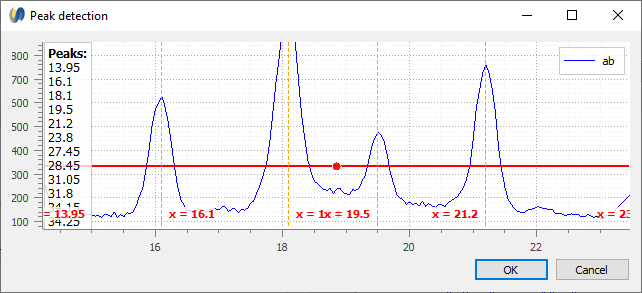
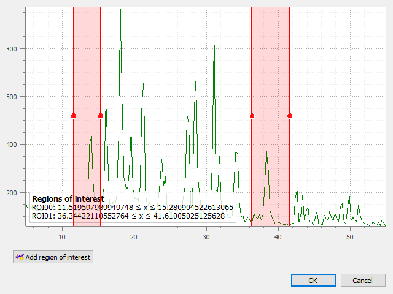
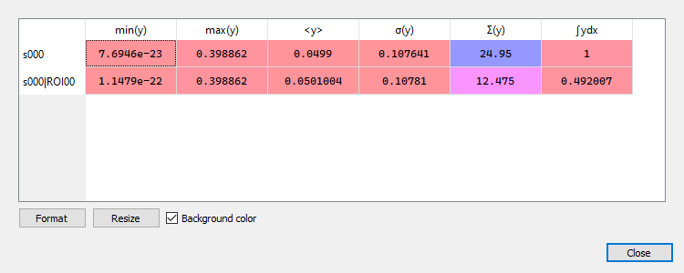
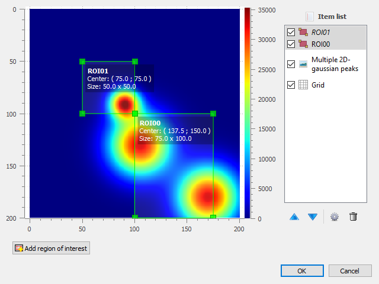
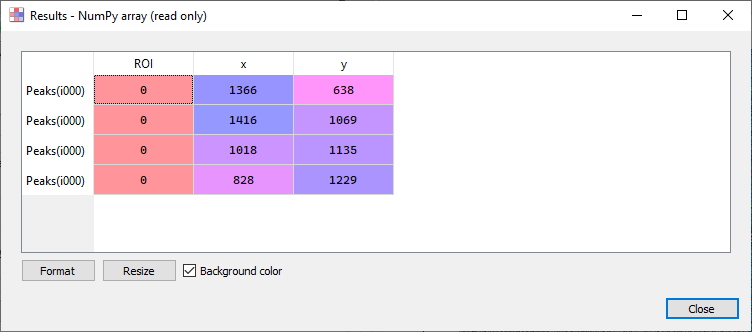

DataLab is a generic signal and image processing software
with unique features designed to meet industrial requirements
(see Key strengths: Extensibility, Interoperability, …).
It is based on Python scientific libraries (such as NumPy,
SciPy or scikit-image) and Qt graphical user interfaces (thanks to
the powerful PlotPyStack - mostly the guidata and PlotPy libraries).
With its user-friendly experience and versatile Usage modes,
DataLab enables efficient development of your data processing and
visualization applications while benefiting from an industrial-grade
technological platform.
DataLab Main features are available not only using the
stand-alone application
(easily installed thanks to the Windows installer or the Python package)
but also by embedding it into your own application
(see the “embedded tests” for detailed examples of how to do so).
DataLab is an open platform for signal and image processing.
Its functional scope is intentionally broad. With its many functions,
some of them technically advanced, DataLab enables the processing and
visualization of all types of scientific data. As a result, scientific,
industrial, and innovation stakeholders can have access to an
easy-to-use tool that is simple to adapt and offers the reliability
of industrial-grade software.
Depending on the application, DataLab can be used in three different modes:
Stand-alone mode: DataLab is a full-fledged processing application that
can be adapted to the client’s needs through the addition of
industry-specific plugins.
Embedded mode: DataLab is integrated into your application to provide
the necessary processing and visualization features.
Remote-controlled mode: DataLab communicates with your application,
allowing it to benefit from its functionality without disrupting
the user experience.
Note
DataLab can also be controlled from your familiar development environment
(e.g., Visual Studio Code, Spyder, …) to perform calculations using
your processing functions while leveraging the advanced features of DataLab.
With its user-friendly experience and versatile usage modes, DataLab enables
efficient development of your data processing and visualization applications
while benefiting from an industrial-grade technological platform.
DataLab is a platform for data processing and visualization (signals or images)
that includes many functions. Developed in Python, it benefits from the
richness of the associated ecosystem in terms of scientific and
technical libraries.
Extensibility: The DataLab plugin system makes it easy to code new
features (specific processing, specific file formats, custom graphical
interfaces). It can also be used as a customizable platform.
Interoperability: DataLab can also be embedded in your own application.
For example, within data processing software, machine-level control systems,
or test bench applications.
Automation: a high-level public API allows for full remote control of
DataLab to open and process data.
Maintainability and testability: DataLab is an industrial-grade
scientific and technical processing software. The built-in automated tests
in DataLab cover 90% of its features, which is significant for software
with graphical interfaces and helps mitigate regression risks.
Researchers, engineers, scientists, you will undoubtedly benefit from the
capabilities of DataLab. Its open-source software model will also allow you
to reinvest your achievements in the open-source community, of which any
reputable publisher should be an active member.
DataLab is available as a stand-alone application for Windows,
which does not require any Python distribution to be installed.
Just run the installer and you’re good to go!
The installer package is available in the Releases section.
It supports automatic uninstall and upgrade feature (no need to uninstall
DataLab before runinng the installer of another version of the
application).
To run DataLab from the command line, type the following:
$ cdl
To show help on command line usage, simply run:
$ cdl --help
usage: app.py [-h] [-b path] [-v] [--unattended] [--screenshot] [--delay DELAY] [--xmlrpcport PORT]
[--verbose {quiet,minimal,normal}]
[h5]
Run DataLab
positional arguments:
h5 HDF5 file names (separated by ';'), optionally with dataset name (separated by ',')
optional arguments:
-h, --help show this help message and exit
-b path, --h5browser path
path to open with HDF5 browser
-v, --version show DataLab version
--unattended non-interactive mode
--screenshot automatic screenshots
--delay DELAY delay (seconds) before quitting application in unattended mode
--xmlrpcport XMLRPCPORT
XML-RPC port number
--verbose {quiet,minimal,normal}
verbosity level: for debugging/testing purpose
$ cdl-alltests
================================================================================
🚀 DataLab v0.9.0 automatic unit tests 🌌
================================================================================
🔥 DataLab characteristics/environment:
Configuration version: 1.0.0
Path: C:\Dev\Projets\DataLab\cdl
Frozen: False
Debug: False
🔥 DataLab configuration:
Process isolation: enabled
RPC server: enabled
Console: enabled
Available memory threshold: 500 MB
Ignored dependencies: disabled
Processing:
Extract all ROIs in a single signal or image
FFT shift: enabled
🔥 Test parameters:
⚡ Selected 51 tests (51 total available)
⚡ Test data path:
C:\Dev\Projets\DataLab\cdl\data\tests
⚡ Environment:
CDL_DATA=C:\Dev\Projets\DataLab_data\
PYTHONPATH=.
DEBUG=
Please wait while test scripts are executed (a few minutes).
Only error messages will be printed out (no message = test OK).
===[01/51]=== 🍺 Running test [tests\annotations_app.py]
===[02/51]=== 🍺 Running test [tests\annotations_unit.py]
===[03/51]=== 🍺 Running test [tests\auto_app.py]
===[04/51]=== 🍺 Running test [tests\basic1_app.py]
===[05/51]=== 🍺 Running test [tests\basic2_app.py]
===[06/51]=== 🍺 Running test [tests\basic3_app.py]
The “HDF5 Browser” is a modal dialog box allowing to import almost any
1D and 2D data into DataLab workspace (and eventually metadata).
Compatible curve or image data are displayed in a hierarchical view
on the left panel, as well as other scalar data (scalar values are just
shown for context purpose and may not be imported into DataLab workspace).
The HDF5 browser is fairly simple to use:
On the left panel, select the curve or image data you want to import
Selected data is plotted on the right panel
Click on “Check all” if you want to import all compatible data
DataLab may be controlled remotely using the XML-RPC protocol which is
natively supported by Python (and many other languages). Remote controlling
allows to access DataLab main features from a separate process.
DataLab may be controlled remotely from an IDE (e.g. Spyder or any other
IDE, or even a Jupyter Notebook) that runs a Python script. It allows to
connect to a running DataLab instance, adds a signal and an image, and then
runs calculations. This feature is exposed by the RemoteCDLProxy class that
is provided in module cdl.proxy.
DataLab may also be controlled remotely from a third-party application, for the
same purpose.
If the third-party application is written in Python 3, it may directly use the
RemoteCDLProxy class as mentioned above. From another language, it is also
achievable, but it requires to implement a XML-RPC client in this language
using the same methods of proxy server as in the RemoteCDLProxy class.
Data (signals and images) may also be exchanged between DataLab and the remote
client application, in both directions.
The remote client application may be written in any language that supports
XML-RPC. For example, it is possible to write a remote client application in
Python, Java, C++, C#, etc. The remote client application may be a graphical
application or a command line application.
The remote client application may be run on the same computer as DataLab or on
a different computer. In the latter case, the remote client application must
know the IP address of the computer running DataLab.
The remote client application may be run before or after DataLab. In the latter
case, the remote client application must try to connect to DataLab until it
succeeds.
When using Python 3, you may directly use the RemoteClient class as in
examples cited above, or the RemoteCDLProxy class as in the following
example.
Here is an example in Python 3 of a script that connects to a running DataLab
instance, adds a signal and an image, and then runs calculations (the cell
structure of the script make it convenient to be used in Spyder IDE):
# -*- coding: utf-8 -*-"""Example of remote control of DataLab current session,from a Python script running outside DataLab (e.g. in Spyder)Created on Fri May 12 12:28:56 2023@author: p.raybaut"""# %% Importing necessary modules# NumPy for numerical array computations:importnumpyasnp# DataLab remote control client:fromcdl.proxyimportRemoteCDLProxy# %% Connecting to DataLab current sessionproxy=RemoteCDLProxy()# %% Executing commands in DataLab (...)z=np.random.rand(20,20)proxy.add_image("toto",z)# %% Executing commands in DataLab (...)x=np.array([1.0,2.0,3.0])y=np.array([4.0,5.0,-1.0])proxy.add_signal("toto",x,y)# %% Executing commands in DataLab (...)proxy.compute_derivative()# %% Executing commands in DataLab (...)proxy.switch_to_panel("image")# %% Executing commands in DataLab (...)proxy.compute_fft()
Here is a Python 2.7 reimplementation of this class:
# -*- coding: utf-8 -*-## Licensed under the terms of the BSD 3-Clause# (see cdl/LICENSE for details)"""DataLab remote controlling class for Python 2.7"""importioimportosimportos.pathasospimportsocketimportsysimportConfigParserascpimportnumpyasnpfromguidata.userconfigimportget_config_dirfromxmlrpclibimportBinary,ServerProxydefarray_to_rpcbinary(data):"""Convert NumPy array to XML-RPC Binary object, with shape and dtype"""dbytes=io.BytesIO()np.save(dbytes,data,allow_pickle=False)returnBinary(dbytes.getvalue())classCDLConnectionError(Exception):"""Error when trying to connect to DataLab XML-RPC server"""passdefget_cdl_xmlrpc_port():"""Return DataLab current XML-RPC port"""ifsys.platform=="win32"and"HOME"inos.environ:os.environ.pop("HOME")# Avoid getting old WinPython settings dirfname=osp.join(get_config_dir(),".DataLab","DataLab.ini")ini=cp.ConfigParser()ini.read(fname)try:returnini.get("main","rpc_server_port")except(cp.NoSectionError,cp.NoOptionError):raiseCDLConnectionError("DataLab has not yet been executed")classRemoteClient(object):"""Object representing a proxy/client to DataLab XML-RPC server"""def__init__(self):self.port=Noneself.serverproxy=Nonedefconnect(self,port=None):"""Connect to DataLab XML-RPC server"""ifportisNone:port=get_cdl_xmlrpc_port()self.port=porturl="http://127.0.0.1:"+portself.serverproxy=ServerProxy(url,allow_none=True)try:self.get_version()exceptsocket.error:raiseCDLConnectionError("DataLab is currently not running")defget_version(self):"""Return DataLab version"""returnself.serverproxy.get_version()defclose_application(self):"""Close DataLab application"""self.serverproxy.close_application()defswitch_to_panel(self,panel):"""Switch to panel"""self.serverproxy.switch_to_panel(panel)defreset_all(self):"""Reset all application data"""self.serverproxy.reset_all()defsave_to_h5_file(self,filename):"""Save to a DataLab HDF5 file"""self.serverproxy.save_to_h5_file(filename)defopen_h5_files(self,h5files,import_all,reset_all):"""Open a DataLab HDF5 file or import from any other HDF5 file"""self.serverproxy.open_h5_files(h5files,import_all,reset_all)defimport_h5_file(self,filename,reset_all):"""Open DataLab HDF5 browser to Import HDF5 file"""self.serverproxy.import_h5_file(filename,reset_all)defopen_object(self,filename):"""Open object from file in current panel (signal/image)"""self.serverproxy.open_object(filename)defadd_signal(self,title,xdata,ydata,xunit=None,yunit=None,xlabel=None,ylabel=None):"""Add signal data to DataLab"""xbinary=array_to_rpcbinary(xdata)ybinary=array_to_rpcbinary(ydata)p=self.serverproxyreturnp.add_signal(title,xbinary,ybinary,xunit,yunit,xlabel,ylabel)defadd_image(self,title,data,xunit=None,yunit=None,zunit=None,xlabel=None,ylabel=None,zlabel=None,):"""Add image data to DataLab"""zbinary=array_to_rpcbinary(data)p=self.serverproxyreturnp.add_image(title,zbinary,xunit,yunit,zunit,xlabel,ylabel,zlabel)defget_object_titles(self,panel=None):"""Get object (signal/image) list for current panel"""returnself.serverproxy.get_object_titles(panel)defget_object_from_title(self,title,panel=None):"""Get object (signal/image) by title"""returnself.serverproxy.get_object_from_title(title,panel)defget_object(self,index=None,group_index=0,panel=None):"""Get object (signal/image) by index"""returnself.serverproxy.get_object(index,group_index,panel)defget_object_uuids(self,panel=None):"""Get object (signal/image) list for current panel"""returnself.serverproxy.get_object_uuids(panel)deftest_remote_client():"""DataLab Remote Client test"""cdl=RemoteClient()cdl.connect()data=np.array([[3,4,5],[7,8,0]],dtype=np.uint16)cdl.add_image("toto",data)if__name__=="__main__":test_remote_client()
index (int) – Object index in current panel. Defaults to None.
group_index (int | None) – Group index. Defaults to None.
panel (str | None) – Panel name. Defaults to None.
If index is not specified, returns the currently selected object.
If group_index is not specified, return an object from the current group.
If panel is not specified, return an object from the current panel.
index (int) – Object index in current panel. Defaults to None.
group_index (int | None) – Group index. Defaults to None.
panel (str | None) – Panel name. Defaults to None.
If index is not specified, returns the currently selected object.
If group_index is not specified, return an object from the current group.
If panel is not specified, return an object from the current panel.
The remote control class methods (either using the proxy or the remote client)
may be completed with additional methods which are dynamically added at
runtime. This mechanism allows to access the methods of the “processor”
objects of DataLab.
In its internal data model, DataLab stores data using two main classes:
cdl.core.model.signal.SignalObj, which represents a signal object, and
cdl.core.model.image.ImageObj, which represents an image object.
These classes are defined in the cdl.core.model package but are exposed
publicly in the cdl.obj package.
Also, DataLab uses many different datasets (based on guidata’s DataSet class)
to store the parameters of the computations. These datasets are defined in
different modules but are exposed publicly in the cdl.param package.
DataLab is a modular application. It is possible to add new features to DataLab
by writing plugins. A plugin is a Python module that is loaded at startup by
DataLab. A plugin may add new features to DataLab, or modify existing features.
The plugin system currently supports the following features:
Processing features: add new processing tasks to the DataLab processing
system, including specific graphical user interfaces.
Input/output features: add new file formats to the DataLab file I/O system.
HDF5 features: add new HDF5 file formats to the DataLab HDF5 I/O system.
Here is a simple example of a plugin that adds a new features to DataLab.
# -*- coding: utf-8 -*-## Licensed under the terms of the BSD 3-Clause# (see cdl/LICENSE for details)"""Test Data Plugin for DataLab----------------------------This plugin is an example of DataLab plugin. It provides test data samplesand some actions to test DataLab functionalities."""importcdl.objasdloimportcdl.tests.dataastest_datafromcdl.configimport_fromcdl.core.computationimportimageascpimafromcdl.core.computationimportsignalascpsigfromcdl.pluginsimportPluginBase,PluginInfo# ------------------------------------------------------------------------------# All computation functions must be defined as global functions, otherwise# they cannot be pickled and sent to the worker process# ------------------------------------------------------------------------------defadd_noise_to_signal(src:dlo.SignalObj,p:test_data.GaussianNoiseParam)->dlo.SignalObj:"""Add gaussian noise to signal"""dst=cpsig.dst_11(src,"add_gaussian_noise",f"mu={p.mu},sigma={p.sigma}")test_data.add_gaussian_noise_to_signal(dst,p)returndstdefadd_noise_to_image(src:dlo.ImageObj,p:dlo.NormalRandomParam)->dlo.ImageObj:"""Add gaussian noise to image"""dst=cpima.dst_11(src,"add_gaussian_noise",f"mu={p.mu},sigma={p.sigma}")test_data.add_gaussian_noise_to_image(dst,p)returndstclassPluginTestData(PluginBase):"""DataLab Test Data Plugin"""PLUGIN_INFO=PluginInfo(name=_("Test data"),version="1.0.0",description=_("Testing DataLab functionalities"),)# Signal processing features ------------------------------------------------defadd_noise_to_signal(self)->None:"""Add noise to signal"""self.signalpanel.processor.compute_11(add_noise_to_signal,paramclass=test_data.GaussianNoiseParam,title=_("Add noise"),)defcreate_paracetamol_signal(self)->None:"""Create paracetamol signal"""obj=test_data.create_paracetamol_signal()self.proxy.add_object(obj)defcreate_noisy_signal(self)->None:"""Create noisy signal"""obj=self.signalpanel.new_object(add_to_panel=False)ifobjisnotNone:noiseparam=test_data.GaussianNoiseParam(_("Noise"))self.signalpanel.processor.update_param_defaults(noiseparam)ifnoiseparam.edit(self.signalpanel):test_data.add_gaussian_noise_to_signal(obj,noiseparam)self.proxy.add_object(obj)# Image processing features ------------------------------------------------defadd_noise_to_image(self)->None:"""Add noise to image"""self.imagepanel.processor.compute_11(add_noise_to_image,paramclass=dlo.NormalRandomParam,title=_("Add noise"),)defcreate_peak2d_image(self)->None:"""Create 2D peak image"""obj=self.imagepanel.new_object(add_to_panel=False)param=test_data.PeakDataParam.create(size=max(obj.data.shape))self.imagepanel.processor.update_param_defaults(param)ifparam.edit(self.imagepanel):obj.data=test_data.get_peak2d_data(param)self.proxy.add_object(obj)def__get_newimageparam(self):"""Create new image parameter dataset"""newparam=self.imagepanel.get_newparam_from_current()newparam.hide_image_type=Trueifnewparam.edit(self.imagepanel):returnnewparamreturnNonedefcreate_sincos_image(self)->None:"""Create 2D sin cos image"""newparam=self.__get_newimageparam()ifnewparamisnotNone:obj=test_data.create_sincos_image(newparam)self.proxy.add_object(obj)defcreate_noisygauss_image(self)->None:"""Create 2D noisy gauss image"""newparam=self.__get_newimageparam()ifnewparamisnotNone:obj=test_data.create_noisygauss_image(newparam)self.proxy.add_object(obj)defcreate_multigauss_image(self)->None:"""Create 2D multi gauss image"""newparam=self.__get_newimageparam()ifnewparamisnotNone:obj=test_data.create_multigauss_image(newparam)self.proxy.add_object(obj)defcreate_2dstep_image(self)->None:"""Create 2D step image"""newparam=self.__get_newimageparam()ifnewparamisnotNone:obj=test_data.create_2dstep_image(newparam)self.proxy.add_object(obj)defcreate_ring_image(self)->None:"""Create 2D ring image"""param=test_data.RingParam(_("Ring"))ifparam.edit(self.imagepanel):obj=test_data.create_ring_image(param)self.proxy.add_object(obj)defcreate_annotated_image(self)->None:"""Create annotated image"""obj=test_data.create_annotated_image()self.proxy.add_object(obj)# Plugin menu entries ------------------------------------------------------defcreate_actions(self)->None:"""Create actions"""# Signal panel ----------------------------------------------------------sah=self.signalpanel.acthandlerwithsah.new_menu(_("Test data")):sah.new_action(_("Add noise to signal"),triggered=self.add_noise_to_signal)sah.new_action(_("Load spectrum of paracetamol"),triggered=self.create_paracetamol_signal,select_condition="always",separator=True,)sah.new_action(_("Create noisy signal"),triggered=self.create_noisy_signal,select_condition="always",)# Image panel -----------------------------------------------------------iah=self.imagepanel.acthandlerwithiah.new_menu(_("Test data")):iah.new_action(_("Add noise to image"),triggered=self.add_noise_to_image)# with iah.new_menu(_("Data samples")):iah.new_action(_("Create image with peaks"),triggered=self.create_peak2d_image,select_condition="always",separator=True,)iah.new_action(_("Create 2D sin cos image"),triggered=self.create_sincos_image,select_condition="always",)iah.new_action(_("Create 2D noisy gauss image"),triggered=self.create_noisygauss_image,select_condition="always",)iah.new_action(_("Create 2D multi gauss image"),triggered=self.create_multigauss_image,select_condition="always",)iah.new_action(_("Create annotated image"),triggered=self.create_annotated_image,select_condition="always",)iah.new_action(_("Create 2D step image"),triggered=self.create_2dstep_image,select_condition="always",)iah.new_action(_("Create ring image"),triggered=self.create_ring_image,select_condition="always",)
DataLab plugin system provides a way to extend the application with new
functionalities.
Plugins are Python modules that relies on two classes:
PluginInfo, which stores information about the plugin
PluginBase, which is the base class for all plugins
Plugins may also extends DataLab I/O features by providing new image or
signal formats. To do so, they must provide a subclass of ImageFormatBase
or SignalFormatBase, in which format infos are defined using the
FormatInfo class.
If DataLab crashed or if any Python exception is raised during
its execution, those log files will be updated accordingly.
DataLab will even notify that new informations are available in
log files at next startup. This is an invitation to submit a bug report.
Reporting unexpected behavior or any other bug on GitHub Issues
will be greatly appreciated, especially if those log file contents
are attached to the report (as information on your installation
configuration, see Installation and configuration viewer).
Because of the multiple ways of installing DataLab on your machine,
understanding why the application behaves unexpectedly without any
information on your configuration could be very challenging.
That is why DataLab provides the dialog box “Installation and configuration”
which gathers all the information about your installation and configuration.
Reporting unexpected behavior or any other bug on GitHub Issues
will be greatly appreciated, especially if above contents are attached
to the report (as well log files, see Log viewer).
Create a new signal which is the sum of all selected signals:
\[y_{M} = \sum_{k=0}^{M-1}{y_{k}}\]
Average
Create a new signal which is the average of all selected signals:
\[y_{M} = \dfrac{1}{M}\sum_{k=0}^{M-1}{y_{k}}\]
Difference
Create a new signal which is the difference of the two selected
signals:
\[y_{2} = y_{1} - y_{0}\]
Product
Create a new signal which is the product of all selected signals:
\[y_{M} = \prod_{k=0}^{M-1}{y_{k}}\]
Division
Create a new signal which is the division of the two selected signals:
\[y_{2} = \dfrac{y_{1}}{y_{0}}\]
Absolute value
Create a new signal which is the absolute value of each selected signal:
\[y_{k} = |y_{k-1}|\]
Log10(y)
Create a new signal which is the base 10 logarithm of each selected signal:
\[z_{k} = \log_{10}(z_{k-1})\]
Peak detection
Create a new signal from semi-automatic peak detection of each selected
signal.

Peak detection dialog: threshold is adjustable by moving the
horizontal marker, peaks are detected automatically (see vertical
markers with labels indicating peak position)#
ROI extraction
Create a new signal from a user-defined Region of Interest (ROI).

ROI extraction dialog: the ROI is defined by moving the position
and adjusting the width of an horizontal range.#
Swap X/Y axes
Create a new signal which is the result of swapping X/Y data.
Open a dialog box to setup multiple Region Of Interests (ROI).
ROI are stored as metadata, and thus attached to signal.
ROI definition dialog is exactly the same as ROI extraction (see above):
the ROI is defined by moving the position and adjusting the width of an
horizontal range.
Compute statistics on selected signal and show a summary table.

Example of statistical summary table: each row is associated to an ROI
(the first row gives the statistics for the whole data).#
Full width at half-maximum
Fit data to a Gaussian, Lorentzian or Voigt model using
least-square method.
Then, compute the full width at half-maximum value.
The computed result is displayed as an annotated segment.#
Full width at 1/e²
Fit data to a Gaussian model using least-square method.
Then, compute the full width at 1/e².
Note
Computed scalar results are systematically stored as metadata.
Metadata is attached to signal and serialized with it when exporting
current session in a HDF5 file.
where \(z_{0}\) is the raw image,
\(z_{f}\) is the flat field image,
\(z_{threshold}\) is an adjustable threshold
and \(\overline{z_{f}}\) is the flat field image average value:
Raw image and flat field image are supposedly already
corrected by performing a dark frame subtraction.
Rotation
Create a new image which is the result of rotating (90°, 270° or
arbitrary angle) or flipping (horizontally or vertically) data.
Distribute on a grid
Distribute selected images on a regular grid.
Reset image positions
Reset selected image positions to first image (x0, y0) coordinates.
Resize
Create a new image which is a resized version of each selected image.
Pixel binning
Combine clusters of adjacent pixels, throughout the image,
into single pixels. The result can be the sum, average, median, minimum,
or maximum value of the cluster.
ROI extraction
Create a new image from a user-defined Region of Interest.

ROI extraction dialog: the ROI is defined by moving the position
and adjusting the size of a rectangle shape.#
Swap X/Y axes
Create a new image which is the result of swapping X/Y data.
Denoise image by subtracting its white top hat transform
(using a disk footprint)
All denoising methods
Perform all denoising methods on image. Combined with the
“distribute on a grid” option, this allows to compare the
different denoising methods on the same image.
Morphology
White Top-Hat (disk)
Perform white top hat transform of an image, using a disk footprint
(implementation based on skimage.morphology.white_tophat)
Black Top-Hat (disk)
Perform black top hat transform of an image, using a disk footprint
(implementation based on skimage.morphology.black_tophat)
Erosion (disk)
Perform morphological erosion on an image, using a disk footprint
(implementation based on skimage.morphology.erosion)
Dilation (disk)
Perform morphological dilation on an image, using a disk footprint
(implementation based on skimage.morphology.dilation)
Opening (disk)
Perform morphological opening on an image, using a disk footprint
(implementation based on skimage.morphology.opening)
Closing (disk)
Perform morphological closing on an image, using a disk footprint
(implementation based on skimage.morphology.closing)
All morphological operations
Perform all morphological operations on an image, using a disk footprint.
Combined with the “distribute on a grid” option, this allows to compare
the different morphological operations on the same image.
Edges
Roberts filter
Perform edge filtering on an image, using the Roberts algorithm
(implementation based on skimage.filters.roberts)
Prewitt filter
Perform edge filtering on an image, using the Prewitt algorithm
(implementation based on skimage.filters.prewitt)
Prewitt filter (horizontal)
Find the horizontal edges of an image, using the Prewitt algorithm
(implementation based on skimage.filters.prewitt_h)
Prewitt filter (vertical)
Find the vertical edges of an image, using the Prewitt algorithm
(implementation based on skimage.filters.prewitt_v)
Sobel filter
Perform edge filtering on an image, using the Sobel algorithm
(implementation based on skimage.filters.sobel)
Sobel filter (horizontal)
Find the horizontal edges of an image, using the Sobel algorithm
(implementation based on skimage.filters.sobel_h)
Sobel filter (vertical)
Find the vertical edges of an image, using the Sobel algorithm
(implementation based on skimage.filters.sobel_v)
Scharr filter
Perform edge filtering on an image, using the Scharr algorithm
(implementation based on skimage.filters.scharr)
Scharr filter (horizontal)
Find the horizontal edges of an image, using the Scharr algorithm
(implementation based on skimage.filters.scharr_h)
Scharr filter (vertical)
Find the vertical edges of an image, using the Scharr algorithm
(implementation based on skimage.filters.scharr_v)
Farid filter
Perform edge filtering on an image, using the Farid algorithm
(implementation based on skimage.filters.farid)
Farid filter (horizontal)
Find the horizontal edges of an image, using the Farid algorithm
(implementation based on skimage.filters.farid_h)
Farid filter (vertical)
Find the vertical edges of an image, using the Farid algorithm
(implementation based on skimage.filters.farid_v)
Laplace filter
Perform edge filtering on an image, using the Laplace algorithm
(implementation based on skimage.filters.laplace)
All edges filters
Perform all edge filtering algorithms (see above) on an image.
Combined with the “distribute on a grid” option, this allows to compare
the different edge filters on the same image.
Canny filter
Perform edge filtering on an image, using the Canny algorithm
(implementation based on skimage.feature.canny)
See Contour Detection for more details on algorithm and associated parameters.
Note
Computed scalar results are systematically stored as metadata.
Metadata is attached to image and serialized with it when exporting
current session in a HDF5 file.
Enter parameters “Neighborhoods size” and “Relative threhold”
Check “Create regions of interest” if you want a ROI defined for each
detected peak (this may become useful when using another computation
afterwards on each area around peaks, e.g. contour detection)

2d peak detection results (see test “peak2d_app.py”)#
Results are shown in a table:
Each row is associated to a detected peak
First column shows the ROI index (0 if no ROI is defined on input image)
Peak coordinates are then obtained from labels center
Duplicates are eventually removed
The 2d peak detection parameters are the following:
“Neighborhoods size”: size of the sliding window (see above)
“Relative threshold”: detection threshold
Feature is based on get_2d_peaks_coords function
from cdl.algorithms module:
defget_2d_peaks_coords(data:np.ndarray,size:int|None=None,level:float=0.5)->np.ndarray:"""Detect peaks in image data, return coordinates. If neighborhoods size is None, default value is the highest value between 50 pixels and the 1/40th of the smallest image dimension. Detection threshold level is relative to difference between data maximum and minimum values. Args: data (numpy.ndarray): Input data size (int | None): Neighborhood size (default: None) level (float | None): Relative level (default: 0.5) Returns: np.ndarray: Coordinates of peaks """ifsizeisNone:size=max(min(data.shape)//40,50)data_max=spf.maximum_filter(data,size)data_min=spf.minimum_filter(data,size)data_diff=data_max-data_mindiff=(data_max-data_min)>get_absolute_level(data_diff,level)maxima=data==data_maxmaxima[diff==0]=0labeled,_num_objects=spi.label(maxima)slices=spi.find_objects(labeled)coords=[]fordy,dxinslices:x_center=int(0.5*(dx.start+dx.stop-1))y_center=int(0.5*(dy.start+dy.stop-1))coords.append((x_center,y_center))iflen(coords)>1:# Eventually removing duplicatesdist=distance_matrix(coords)forindexinreversed(np.unique(np.where((dist<size)&(dist>0))[1])):coords.pop(index)returnnp.array(coords)
Then, each contour is fitted to the closest ellipse (or circle)
Feature is based on get_contour_shapes function
from cdl.algorithms module:
defget_contour_shapes(data:np.ndarray,shape:str="ellipse",level:float=0.5)->np.ndarray:"""Find iso-valued contours in a 2D array, above relative level (.5 means FWHM), then fit contours with shape ('ellipse' or 'circle') Args: data (numpy.ndarray): Input data shape (str | None): Shape to fit (default: "ellipse") level (float | None): Relative level (default: 0.5) Returns: np.ndarray: Coordinates of shapes """# pylint: disable=too-many-localscontours=measure.find_contours(data,level=get_absolute_level(data,level))coords=[]forcontourincontours:ifshape=="circle":model=measure.CircleModel()ifmodel.estimate(contour):yc,xc,r=model.paramsifr<=1.0:continuecoords.append([xc-r,yc,xc+r,yc])elifshape=="ellipse":model=measure.EllipseModel()ifmodel.estimate(contour):yc,xc,b,a,theta=model.paramsifa<=1.0orb<=1.0:continuedxa,dya=a*np.cos(theta),a*np.sin(theta)dxb,dyb=b*np.sin(theta),b*np.cos(theta)x1,y1,x2,y2=xc-dxa,yc-dya,xc+dxa,yc+dyax3,y3,x4,y4=xc-dxb,yc-dyb,xc+dxb,yc+dybcoords.append([x1,y1,x2,y2,x3,y3,x4,y4])else:raiseNotImplementedError(f"Invalid contour model {model}")returnnp.array(coords)
Execute a “computing server” in background, in another process
For each computation, send serialized data and computing function
to the server and wait for the result
It is then possible to stop any computation at any time by killing the
server process and restarting it (eventually after incrementing the
communication port number)
Optimize image displaying performance
Add preferences dialog box
Add new image processing features: denoising, …
New plugin system: API for third-party extensions
Objective #1: a plugin must be manageable using a single Python script,
which includes an extension of ImageProcessor, ActionHandler
and new file format support
Objective #2: plugins must be simply stored in a folder wich defaults
to the user directory (same folder as “.DataLab.ini” configuration
file)
Add a macro-command system:
New embedded Python editor
Scripts using the same API as high-level applicative test scenarios
Support for macro recording
Add an xmlrpc server to allow DataLab remote control:
Controlling DataLab main features (open a signal or an image,
open a HDF5 file, etc.) and processing features
(run a computation, etc.)
Take control of DataLab from a third-party software
Run interactive calculations from an IDE
(e.g. Spyder or Visual Studio Code)
The first step is to fork the project on GitHub.
You can do that by visiting DataLab project
and clicking on the “Fork” button on the top right corner of the page.
Once you have forked the project, you will have a copy of the project
in your own GitHub account. Then you can clone the project on your computer
and start working on it.
Once you have made some changes, you can submit a pull request to the
original project. To do that, go to your forked project on GitHub and
click on the “Pull request” button on the top right corner of the page.
Then you will have to fill a form to describe your pull request. Once
you have submitted the pull request, the project maintainers will review
your changes and merge them if they are satisfied.
During the review process, the project maintainers will check that your
code follows the coding guidelines and that it does not break the existing
tests. If your code does not follow the coding guidelines, you will have
to fix it before your pull request can be merged.
See also
The Coding guidelines page presents the coding guidelines that you
should follow when contributing to the project.
In addition to the generic coding guidelines, we have the following specific
guidelines:
Write docstrings for all classes, methods and functions. The docstrings
should follow the Google style.
Add typing annotations for all functions and methods. The annotations should
use the future syntax (from__future__importannotations)
Try to keep the code as simple as possible. If you have to write a complex
piece of code, try to split it into several functions or classes.
Add as many comments as possible. The code should be self-explanatory, but
it is always useful to add some comments to explain the general idea of the
code, or to explain some tricky parts.
Do not use frommoduleimport* statements, even in the __init__
module of a package.
Avoid using mixins (multiple inheritance) when possible. It is often
possible to use composition instead of inheritance.
Avoid using __getattr__ and __setattr__ methods. They are often used
to implement lazy initialization, but this can be done in a more explicit
way.